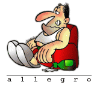
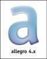
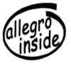

Allegro - Logos 3
Logos
| Page 1 - 2 - 3 |
The following four logos were created and donated by Mihai Dragan, a software developer who joined the Allegro community not very long ago, and wanted to give back something in exchange for the excellent library. The logos were made with Gimp and you are free to use and distribute them. In fact, if you want them with other dimensions, colors or texts, just email him personally, since he has the sources and can redraw them according to your suggestions. Each logo is sized 500x256 and weighs around 60KB. Click on the thumbnails to view the full version.
{kind=link}
{kind=link}
{kind=link}
{kind=link}

A long time ago, in a mailing list
far, far away… Peter Wang said: ‘Given that we use “AL” so much,
why have we not adopted a fat, drunk couch potato for a
mascot?’. Later, Grzegorz Godlewski, being unable to forget this
sentence, asked Karol Krenski, who makes GPL pictures for different open
source projects, to draw the very same picture you can see to the right
of this text. Impressed? Hold your breath, because you can go to Karol’s web
page to see this logo and many more, like the ones he drew for SDL
or Postfix. He also has the sources, so you could rescale this image or
ask him to do any modifications you may want.
 Bruno S. Drago made the small logo to the left for one of his games and contributed it to the Allegro community. Bruno keeps working on his games, which you can find at: http://www.xuti.net/.
{kind=link}
Jeff Katz has also contributed the logo to the right. You can click on it to get a higher resolution version.
 Eric Pietrocupo created the logo to the left with the Windows version of Gimp. Click on the image to get a bigger version.
{kind=link}
{kind=link}
André Luiz Pereira Álvares created the logo to the right. Click on the image to get a bigger version.
PhoenixJ made the logo to the left in Macromedia Flash. Since the source is in vector format it can be scaled to any size (the background color and format can consequently be changed, too). You can visit PhoenixJ’s web page, where you can see more of his artwork and get his email if you want to request a modification of this logo.
| Page 1 - 2 - 3 |